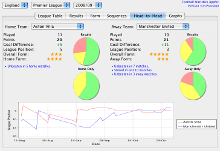
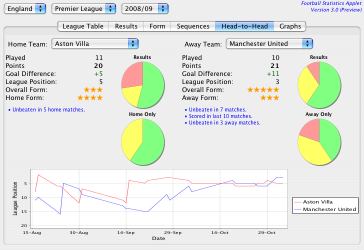
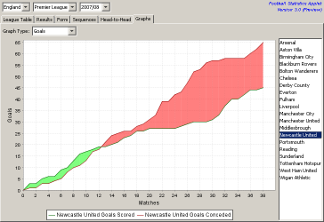
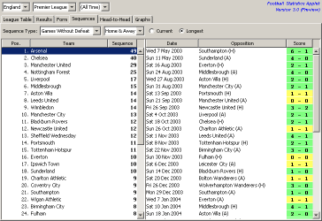

Football Statistics Applet
The Football Statistics Applet (FSA) is open source software licensed under the terms of the GNU General Public License, Version 3.
The Football Statistics Applet provides league tables, results, form tables, sequences and head-to-head analysis for league football competitions. It can be embedded in a web page to provide fast, low-maintenance statistics. It is an entirely client-side solution and will work with any web hosting package (there is no need for a servlet container or database server).
Important Links
- Version 3.0 Preview - A demo of the latest version of the Football Statistics Applet (requires Java 5.0).
- Version 2.0.3 Download - The old FSA stable release. The zip file contains a sample HTML page that should give some indication of how to embed the applet in a web page.
- Results File Format - A description of the structure of the plain text data files used by the Football Statistics Applet.
New in Version 3.0
") 

- Updated Source Code
- For version 3.0, the applet's source code has been brought up-to-date and now takes advantage of modern Java features (Java 5.0 rather than 1.1).
- Improved User Interface
- Because it targeted Java 1.1, the original applet could not use Swing for its user interface. Instead it had to use the limited components provided by AWT. Version 3.0 uses Swing, providing a much richer user experience.
- Better Graphs
- Moving to Swing means we now use the excellent JFreeChart library for graphs rather than the rather basic and ugly custom AWT charts used in version 2.
- Compressed Data Files
- Data files can now optionally use GZip compression to reduce their size by up to 80%. This reduces the amount of data transferred by your web server and makes things noticeably faster for users on slow connections.
- Internationalisation
- Prior to version 3, FSA was only available in English. Java.net user maty535 has implemented i18n support and provided an initial translation into Slovak. If you would like to see FSA in your language, you can provide your own translations (please submit your efforts via a pull request on GitHub).
- More Detailed Sequence Statistics
- The software now displays a list of all of the results that contributed to a particular sequence. Additionally, there is a new sequence that tracks the number of matches since a team last kept a cleansheet.
- Support for Split Leagues
- Previous versions of the software did not work properly for the Scottish Premier League (and similar leagues such as Northern Ireland's IFA Premiership) because the split format permits teams to finish above others that have more points. Version 3.0 allows you to specify that the league will split in half after a certain number of games.

